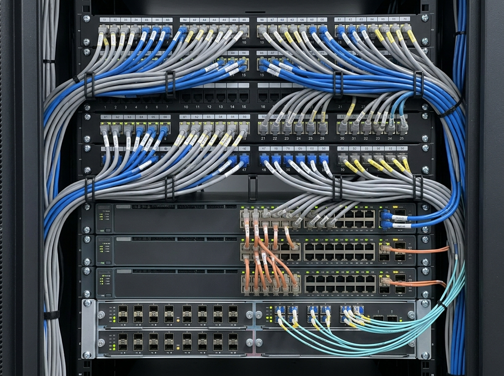
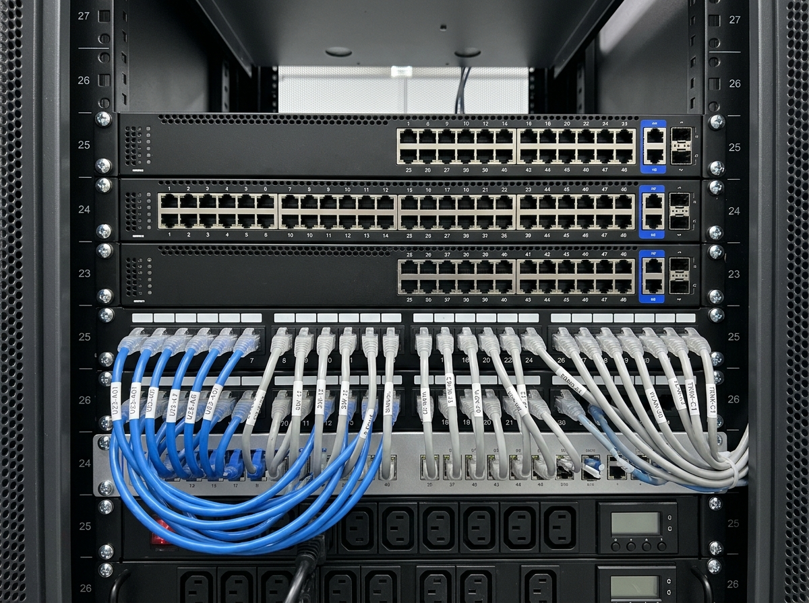

OUR STORY
Why we built RackTrack.
Every system above the rack assumed the rack matched the record. No system could prove it.
Two decades of running enterprise infrastructure, and one problem that never went away. We stopped waiting for someone else to solve it.
See the platformWHAT RACKTRACK DOES
Physical infrastructure intelligence, captured, validated, reconciled, and put to work.
One phone sweep produces a continuously reconciled record of your physical rack — inventory, topology, port state, and firmware posture, synced to the systems your teams already run.
Phone-guided rack sensing
Physical-to-network truth
Structured intelligence
Audit-ready artifacts
FOUNDER NARRATIVE
The story behind RackTrack.
The moment
It started in a rack audit where the spreadsheet, the switch labels, and the live ports each told a different story. A team that should have been planning a change was crouched in front of cabinets instead — reading tiny labels, taking photos, and cross-checking ports by hand.

The reason
One missed cable could delay a migration, or send someone back into the data hall after hours. The physical layer deserved the same confidence teams already expect from their cloud dashboards and enterprise systems.

The team
Our founding team brings enterprise architecture leadership, integration depth from Salesforce and MuleSoft implementations, hands-on networking operations experience, and product design discipline built in complex infrastructure environments.
The build
RackTrack is built on patent-pending innovations for automated network cable mapping. The architecture is the product of eighteen months of engineering work, and is now the subject of a pending US utility patent application.
THE COMPANY
A small team, built for enterprise infrastructure.
15+
Employees
A multidisciplinary team of AI researchers, software engineers, and domain experts who have run infrastructure themselves.
2
Locations — IN & USA
Operating from Hyderabad, India and Connecticut, USA, serving customers across regions.
4+
Startup programmes
Recognized by leading startup ecosystems for innovation and growth potential.
Enterprise ready
Designed for scalable, secure, and reliable data center operations.
R&D-driven innovation
Leveraging computer vision and intelligent automation for infrastructure management.
WHY IT MATTERS
Less manual audit work. More rack data your teams can actually use.
RackTrack keeps physical rack data current, structured, and ready for the teams that operate it every day.
0%
Truth fidelity
Verified device and port recognition.
Minutes
Time to verified state
From rack capture to operational context.
0%
Manual operations reduced
Less manual discovery and triage.
OUR MISSION
Build the Physical Infrastructure Intelligence Platform for data centers.
Not an audit tool. Not a DCIM replacement. The intelligence layer underneath both.
- Not an audit tool
- Not a DCIM replacement
- Patent-pending platform